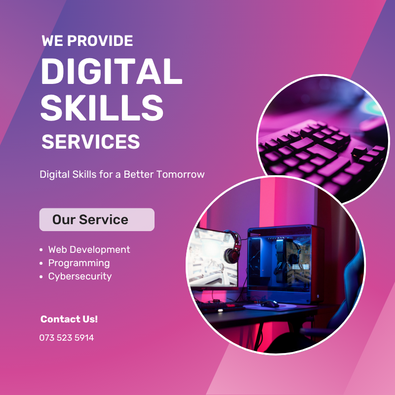

About Us
Fuse Techni NPC is a technology-based NGO that is originally based and founded in South Africa KwaZulu Natal, Durban. It focuses on bridging the gap between South African citizens and technology. Its purpose is to help these citizens build up their skills in the new technologically advanced world. It does this by providing digital skills training as it focuses more on the youth of South Africa that is live in disadvantaged communities. It provides them with digital skills that will benefit them in the workforce.
Mission
Our mission is to empower our youth living in disadvantaged communities through digital skills training and employement opportunities.
Vision
To build a future where every individual has the technical agency and advantage to thrive in the digital economy.
Click on a team member to see more information about them.
Meet Our Team

CEO
Sisanda Mkhize

COO
Thabiso Dlamini

CFO
Manon Smith

CTO
Brian Mumbo

HR Manager
Alwande Ngidi
Gallery


